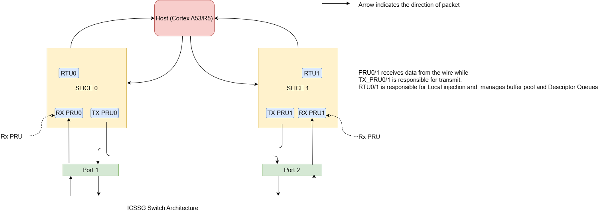
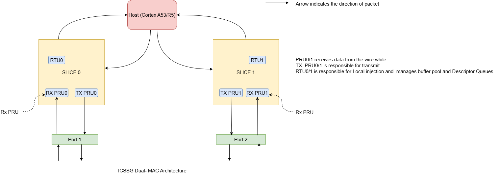
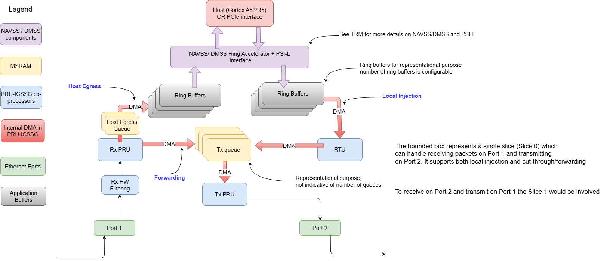

|
AM64x MCU+ SDK
12.01.00
|
|
|
AM64x MCU+ SDK
12.01.00
|
|
ICSSG can be configured to operate in two modes, Dual-MAC and Switch.
It is important to differentiate between these two modes. Dual-MAC mode implements two independent Ethernet MACs using ICSSG Slice 0/1, they have two different MAC, IP addresses and two different instances of the TCP/IP stack, while a Switch presents a single IP and MAC address for any external entity.
The ICSSG architecture consists of two logical slices to implement the switch functionalities. PRU0 (RX PRU0), TX_PRU0 and RTU_PRU0 is considered as Slice0 and the other cores PRU1 (RX PRU1), TX_PRU1 and RTU_PRU1 form the Slice1.
In Switch mode, each slice handles cross-port transmission: receiving on one port and transmitting on the opposite port. In contrast, in Dual-MAC mode, each slice operates independently, handling both receiving and transmitting on the same port.
This has been achieved by accordingly configuring the TX_MUX_SELn field of MII_RT_TXCFGn memory-mapped register (n= 0,1). For more details, refer TRM section 6.4.14.11 PRU_MII_RT_MII_RT Registers.
| Bit-field | Switch | Dual-MAC |
|---|---|---|
| TX_MUX_SEL0 | 1h | 0h |
| TX_MUX_SEL1 | 0h | 1h |


There are 3 basic packet flow paths:

The ICSSG Queues used for packet content buffering are elaborated here
File : {Any of ENET ICSSG examples} CCS Project > Generated Source > SysConfig > ti_enet_soc.c
Buffer are allocated for each of the packet flow paths
| Memory Pool | Purpose | Default size of each Queue in Pool | Number of Queues | Default Total pool size |
|---|---|---|---|---|
| gEnetSoc_icssg1PortPoolMem_0 | Forwarding path buffer used for the purpose of Forwarding of Frames from Port 1 to Port 2 | 6KB | Default: 8 (Max: 8 to support 8 QoS) | 48KB |
| gEnetSoc_icssg1PortPoolMem_1 | Forwarding path buffer used for the purpose of Forwarding of Frames from Port 2 to Port 1 | 6KB | Default: 8 (Max: 8 to support 8 QoS) | 48KB |
| gEnetSoc_icssg1HostPoolMem_0 | Local Injection path buffer used for the purpose of transmitting frames from the host to Port A or/and Port B via ICSSG Slice 0. | 6KB when Gigabit support is enabled 3KB when Gigabit support is disabled | Calculated as: n = 2 * QoS Level (Factor 2 accounts for the Own-port Host pool and Opposite-port Host pool) Default Configuration: QoS level is 3 by default in SysCfg, hence there are 2 * 3 = 6 queues | 36KB when Gigabit support is enabled 18KB when Gigabit support is disabled |
| gEnetSoc_icssg1HostPoolMem_1 | Local Injection path buffer used for the purpose of transmitting frames from the host to Port A or/and Port B via ICSSG Slice 1. | 6KB when Gigabit support is enabled 3KB when Gigabit support is disabled | Calculated as: n = 2 * QoS Level (Factor 2 accounts for the Own-port Host pool and Opposite-port Host pool) Default Configuration: QoS level is 3 by default in SysCfg, hence there are 2 * 3 = 6 queues | 36KB when Gigabit support is enabled 18KB when Gigabit support is disabled |
| gEnetSoc_icssg1HostQueueMem_0 | Host Egress path buffer used for the purpose of reception of frames from the Port A to the host. | 8KB when Gigabit support is enabled 5KB when Gigabit support is disabled | Default: 2 | 16KB when Gigabit support is enabled 10KB when Gigabit support is disabled |
| gEnetSoc_icssg1HostQueueMem_1 | Host Egress path buffer used for the purpose of reception of frames from the Port B to the host. | 8KB when Gigabit support is enabled 5KB when Gigabit support is disabled | Default: 2 | 16KB when Gigabit support is enabled 10KB when Gigabit support is disabled |
Buffers are allocated for the Host egress and Local injection paths. However, no buffers are allocated for forwarding path since Dual-MAC mode by definition does not have the feature of forwarding.
| Memory Pool | Purpose | Default size of each Queue in Pool | Number of Queues | Default Total pool size |
|---|---|---|---|---|
| gEnetSoc_icssg1PortPoolMem_0 | Forwarding path buffer used for the purpose of Forwarding of Frames from Port 1 to Port 2 | 0KB | 0 | 0KB |
| gEnetSoc_icssg1PortPoolMem_1 | Forwarding path buffer used for the purpose of Forwarding of Frames from Port 2 to Port 1 | 0KB | 0 | 0KB |
| gEnetSoc_icssg1HostPoolMem_0 | Local Injection path buffer used for the purpose of transmitting frames from the host to Port A or/and Port B via ICSSG Slice 0. | 8KB when Gigabit support is enabled 4KB when Gigabit support is disabled | n = QoS Level Default: QoS level is 3 by default in SysCfg | 24KB when Gigabit support is enabled 12KB when Gigabit support is disabled |
| gEnetSoc_icssg1HostPoolMem_1 | Local Injection path buffer used for the purpose of transmitting frames from the host to Port A or/and Port B via ICSSG Slice 1. | 8KB when Gigabit support is enabled 4KB when Gigabit support is disabled | n = QoS Level Default: QoS level is 3 by default in SysCfg | 24KB when Gigabit support is enabled 12KB when Gigabit support is disabled |
| gEnetSoc_icssg1HostQueueMem_0 | Host Egress path buffer used for the purpose of reception of frames from the Port A to the host. | 8KB when Gigabit support is enabled 5KB when Gigabit support is disabled | Default: 2 | 16KB when Gigabit support is enabled 10KB when Gigabit support is disabled |
| gEnetSoc_icssg1HostQueueMem_1 | Host Egress path buffer used for the purpose of reception of frames from the Port B to the host. | 8KB when Gigabit support is enabled 5KB when Gigabit support is disabled | Default: 2 | 16KB when Gigabit support is enabled 10KB when Gigabit support is disabled |
Port pool memory usage can be modified by varying the:
{MCU_SDK_install_path}\source\networking\enet\core\sysconfig\networking\.meta\enet_icss\templates\enet_soc_cfg_am64x_am243x.c.xdtICSSG_SWITCH_PORT_POOL_SIZE to configure the required queue size.ti_enet_soc.c (memory allocated can also be verified in the .map file under the .icss_mem output section)ENET_MACPORT_IOCTL_SET_EGRESS_QOS_PRI_MAPSteps:
{MCU_SDK_install_path}\source\networking\enet\core\include\per\icssg.hICSSG_SWITCH_PORT_BUFFER_POOL_NUM to any value from 1 to 8.gmake -s -j8 -f makefile.am243x enet-icssg_r5f.ti-arm-clang here {MCU_SDK_install_path}{MCU_SDK_install_path}\source\networking\enet\core\examples\enet_layer2_icssg\Example
ICSSG_SWITCH_PORT_BUFFER_POOL_NUM = 3, Then the available pools will only be 0 ,1, 2.The Input Argument of the IOCTL ENET_MACPORT_IOCTL_SET_EGRESS_QOS_PRI_MAP can be set based on below: uint32_t EnetPort_PriorityMap::priorityMap[ENET_PRI_NUM] : The array index corresponds to the PCP and the value holds the mapped Q value
| PCP(Index) | Queue Number = priorityMap[pcp] |
|---|---|
| 0 | 0 |
| 1 | 0 |
| 2 | 0 |
| 3 | 1 |
| 4 | 1 |
| 5 | 2 |
| 6 | 2 |
| 7 | 2 |
Sample IOCTL usage: ENET_MACPORT_IOCTL_SET_EGRESS_QOS_PRI_MAP
Host pool memory usage can be modified by varying the:
{MCU_SDK_install_path}\source\networking\enet\core\sysconfig\networking\.meta\enet_icss\templates\enet_soc_cfg_am64x_am243x.c.xdtICSSG_SWITCH_HOST_POOL_SIZE to configure the required queue size.ti_enet_soc.c..map file under the .icss_mem output section.ICSSG_SWITCH_HOST_BUFFER_POOL_NUM_CFG: The number of ICSSG Host buffer pools is by default defined as (2 * QoS Level). By default, QoS Level=3 hence number of queue in the pool is 6.To modify the number of pools:
{MCU_SDK_install_path}\source\networking\enet\core\sysconfig\networking\.meta\enet_icss\enet_icss.syscfgti_enet_soc.c. (Memory allocated can also be verified in the .map file under the .icss_mem output section)According to IEEE 802.1D, there can be different traffic types like best effort, excellent effort generated by different user application. Some of these traffic might be latency sensitive for ex: PTP network control traffic. Traffic-class to transmit queue mapping feature determines the transmit queue for transmitting data streams based on traffic class configured by the user application. Port queues supports maximum of 8 queues (per port) to treat the traffic at QoS level. For ex: best effort data can be segregated from all the time-critical traffic. Port queues are serviced from highest (7) to lowest priority (0), so highest txPktTc variable number (between 0-7) shall be serviced first. There are a total of 8 QoS Levels and each QoS Level has a dedicated Queue. Also, multiple traffic types can be combined to single queue. Refer IEEE 802.1D for more details.
gEnetSoc_icssg1HostPoolMem_0/1).txPktInfo->txPktTc parameter.enet_layer2_icssg.c.txPktTc can range from 0 to 7 corresponding to the 8 levels of QoS.txPktTc passed should be less than the "QoS Level" set in SysCfg by the user. If not, the packets will be sent to a queue which has not been initialized itself, resulting in stall due to no buffer.  1.8.20
1.8.20